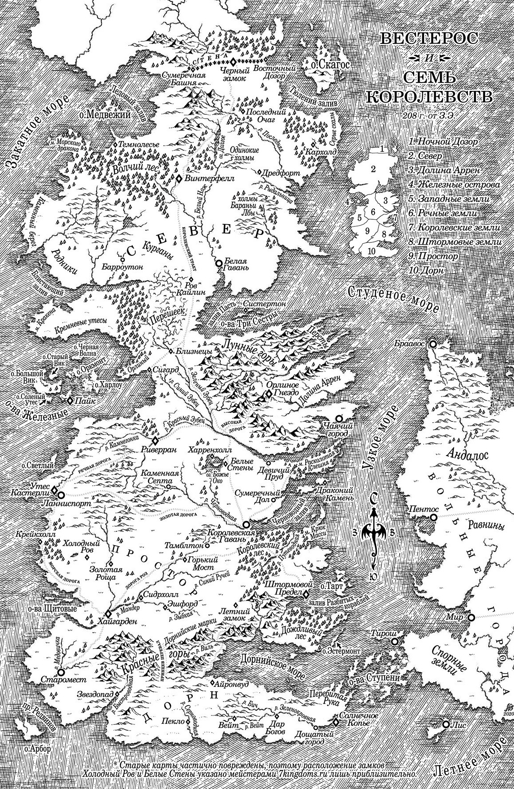
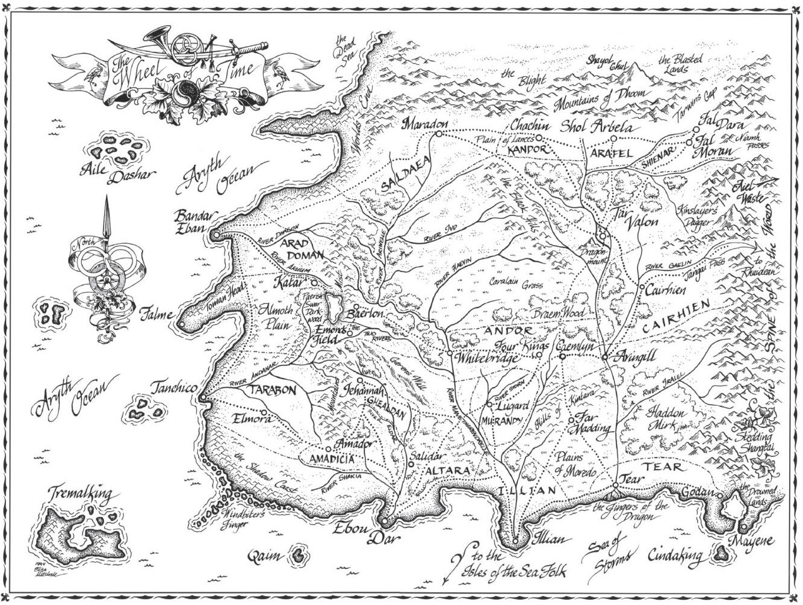

Game Rules
Welcome to the treacherous battlefields of Westeros, where cunning strategies and calculated alliances will determine the fate of the Seven Kingdoms. In this epic game of Risk: Game of Thrones World at War, seven noble houses will clash in a quest for dominance and control. As a wise player, your objective is simple yet challenging: conquer vast territories, amass valuable points, and emerge victorious as the ruler of the realm. But remember, in this game, power comes at a price, and even the mightiest can fall. Safeguard your capital, for its loss could spell doom. Rally your forces, forge alliances, and let the war for the Iron Throne begin!
Turn Order
 The house you shall lead into battle will be determined by the roll of a dice, where the highest roll earns the privilege of their preferred house. Once the houses are chosen, the turn order follows a fixed sequence: Stark, Targaryen, Baratheon, Lannister, Ghiscari, Tyrell, and Martell. With your house secured and the turn order set, strategic mastery and cunning alliances will be your greatest assets as you navigate the perilous game board.
Reinforcment
There are 3 ways of earning troops, the first is by counting the number of castles and territories you own and dividing it by 3 add that many troops. Furthermore if you occupy an entire continent you will receive additional troops according to which continent you own. Lastly, if you are able to do a combination with youre territory cards you can earn more troops depending on the combination. Additionally, you may deploy one special unit per turn by exchanging in a territory card.
Collect Gold
There are 3 ways of earning troops, the first is by counting the number of castles and territories you own and dividing it by 3 add that many troops. Furthermore if you occupy an entire continent you will receive additional troops according to which continent you own. Lastly, if you are able to do a combination with youre territory cards you can earn more troops depending on the combination. Additionally, you may deploy one special unit per turn by exchanging in a territory card.
Deploy Army
There are 3 ways of earning troops, the first is by counting the number of castles and territories you own and dividing it by 3 add that many troops. Furthermore if you occupy an entire continent you will receive additional troops according to which continent you own. Lastly, if you are able to do a combination with youre territory cards you can earn more troops depending on the combination. Additionally, you may deploy one special unit per turn by exchanging in a territory card.
Invasion
There are 3 ways of earning troops, the first is by counting the number of castles and territories you own and dividing it by 3 add that many troops. Furthermore if you occupy an entire continent you will receive additional troops according to which continent you own. Lastly, if you are able to do a combination with youre territory cards you can earn more troops depending on the combination. Additionally, you may deploy one special unit per turn by exchanging in a territory card.
Maneuvre
There are 3 ways of earning troops, the first is by counting the number of castles and territories you own and dividing it by 3 add that many troops. Furthermore if you occupy an entire continent you will receive additional troops according to which continent you own. Lastly, if you are able to do a combination with youre territory cards you can earn more troops depending on the combination. Additionally, you may deploy one special unit per turn by exchanging in a territory card.
Setup:
| 1 |
|
| 2 |
|
| 3 |
|
| 4 |
|